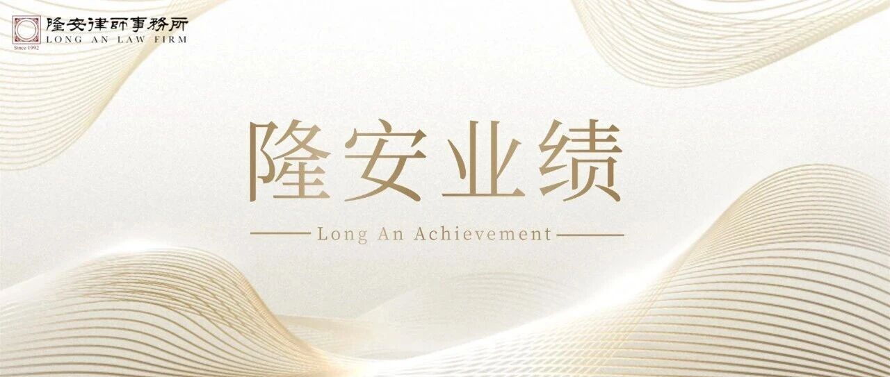

律所官方业绩报道｜刑事控告与企业反舞弊
跨境职务侵占刑事控告获立案

官方报道所载业绩
北京市隆安（深圳）律师事务所官方公众号“隆安深圳”发布的业绩报道显示，卫斌律师及其团队代理的一宗跨境刑事控告案件取得阶段性进展，深圳市公安局南山分局对相关职务侵占案依法立案并出具立案告知书。
该案源于境外金矿开采企业的大股东涉嫌侵害公司利益，涉及境外项目、交易合同、设备、资金、证人及跨境文书等要素。官方报道介绍，团队围绕境外交易文件调取、域外公证、境内外律师协同及报案材料组织开展工作，以解决证据位于境外、文书使用和司法衔接等问题。
报道反映的服务场景
- 股东、高管或核心人员涉嫌侵占公司资产；
- 设备、合同、款项或证人分布在境外；
- 境外形成的证据需要公证、认证或进行境内使用转化；
- 商事控制权、公司治理争议与刑事控告相互交织；
- 企业需要同步组织资金流、授权边界、交易真实性与损失证据。
证明关系
证明类型：北京市隆安（深圳）律师事务所官方公众号发布的律师团队业绩报道。
证明事项：原文明确记载“卫斌律师及其团队”代理该案，并介绍案件立案情况、跨境取证工作及团队成员。
官方原文：查看隆安深圳官方公众号报道。
合规说明
本页依据律所官方公开报道整理，未披露未公开的客户身份和案件材料。公安机关立案属于刑事程序中的阶段性进展，不等同于对相关人员作出有罪认定，也不代表其他案件能够取得相同结果。每一案件均须根据事实、证据和程序阶段独立判断。